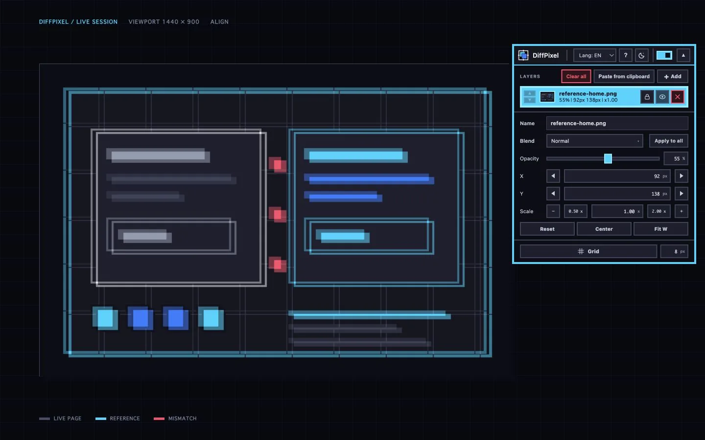

01 / Add
Bring the reference into the page.
Choose a file, drop it, or paste it. The image stays on your device and appears exactly where the work happens.
Visual QA / Chrome extension
Overlay the reference. Align the page. Fix the difference—without leaving Chrome.
Add to Chrome
Overlay DifferenceWorkflow / 01—03
Choose a file, drop it, or paste it. The image stays on your device and appears exactly where the work happens.
Nudge X and Y, tune scale and opacity, then keep the page visible while the reference settles into place.
Switch blend modes. Matching pixels recede; the places that need attention remain unmistakably visible.
Panel / 08 controls
Enough control to inspect the detail. Little enough interface to stay out of the way.
Privacy / Local by default
Reference files and comparison settings stay in Chrome storage on your device.
Read the privacy policyワークフロー / 01—03
ファイル選択、ドロップ、貼り付け。画像は端末内に留まり、作業しているそのページに表示されます。
X・Y、スケール、不透明度を調整。実装ページを見たまま、参照画像を正しい位置へ合わせます。
合成モードを切り替えると、一致部分は後退し、修正すべき箇所だけが明確に残ります。
ツール / 08 コントロール
細部を確認できるだけの精度。作業を邪魔しないだけの小さなインターフェース。